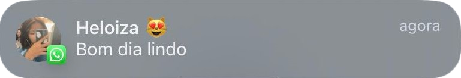
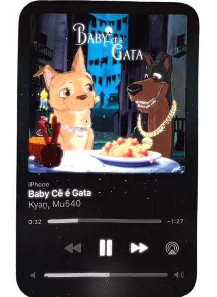

Por alguma razão, coincidência do destino, você resolveu me seguir no Instagram (entre todos os seguidores da Etec, você me escolheu). Só Deus sabe por que, rsrs, mas não importa. O importante é que eu sou atacante (embora você discorde) e te convidei para sair. Eu já estava até vendo o "não", mas por incrível que pareça, você aceitou! O primeiro encontro não foi dos melhores, rsrs, mas o segundo foi muito bom, de verdade. Quanto ao terceiro, ainda não aconteceu, mas eu sei que deve ter sido muito legal. Inclusive, estou falando com você agora (03/11/2023) sobre o domingo que a gente vai se encontrar.
Enfim, eu já te perguntei umas 10 vezes o que você viu em mim, e você diz: Bonito, engraçado, educado (e pardo). Eu só não acredito na primeira parte, mas tudo bem. Sempre quis conhecer alguém que me entendesse e fosse muito legal, até finalmente te conhecer.
Suas qualidades são tantas que nem sei por onde começar. Primeiro, tem o seu humor, que é preto que africano no sol. Seu jeito carinhoso, seu beijo (que deve ser muito bom, porque eu ainda não te beijei, mas eu sei que é bom) e você é linda e me entende. Sério, eu acho você muito gata. Você é perfeita mina!.
Mas depois de todo esse papo meloso, rsrs, só queria te dizer que você é demais! Depois que te conheci, meus dias são muito mais felizes. Sempre que estou triste ou bravo com alguma coisa, seja na escola, no trabalho ou no curso, você sempre está lá me mandando mensagem, ou vice-versa, e a gente ri muito juntos.
É como o Mc Hariel disse naquela musica:
"oh meu cúpido querido capricha no tiro e acerta uma maluca que quer ser doida comigo"
E quer saber qual a melhor parte do meu dia?
é essa aqui:

Então, espero que a gente fique junto.

(Lembrei que você falou que gosta dessa musica do Kyan então aproveitei pra colocar ela aqui)